Uncertainty I + II
POL51
Haley Daarstad
University of California, Davis
July 20, 2026
Late Assignments
CONTACT ME ASAP!! BEFORE FRIDAY @ 6 PM
I will not be taking any late assignments from the first half of class after Sunday
If you used a wavier, please email me the assignment it was used on so I have it in writing
Plan for today
Why are we uncertain?
Sampling
Quantifying uncertainty
Are we sure it’s not zero?
Where things stand
So far: worrying about causality
how can we know the effect of X on Y is not being confounded by something else?
Last bit: how confident are we in our estimates given…
that our estimates are based on samples?
Uncertainty in the wild
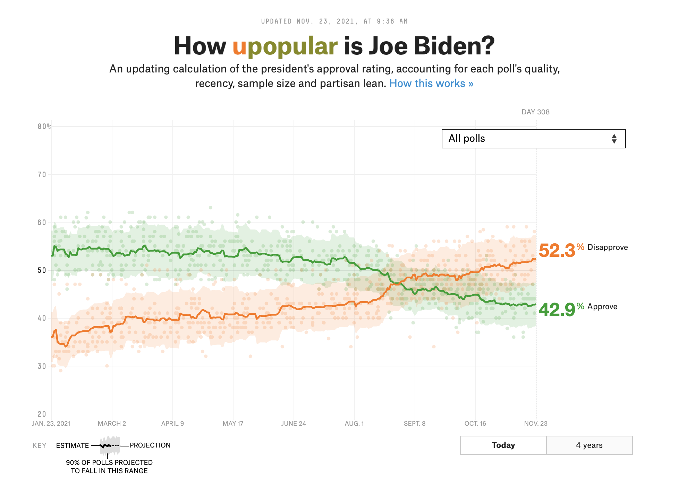
Uncertainty in the wild
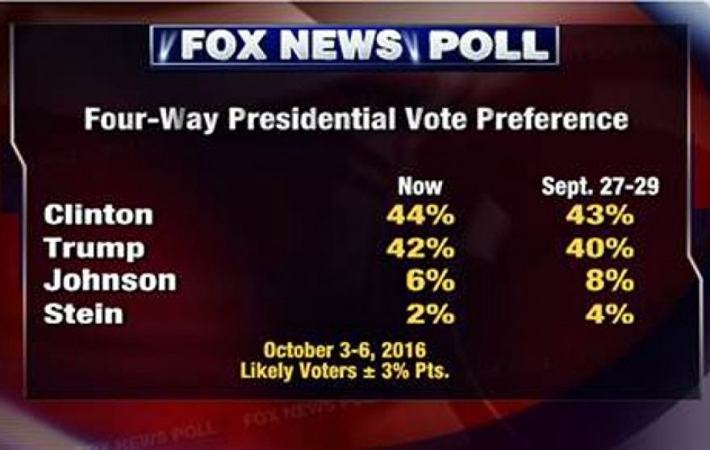
Uncertainty in the wild
The “bounds” in geom_smooth tells us something about how confident we should be in the line:
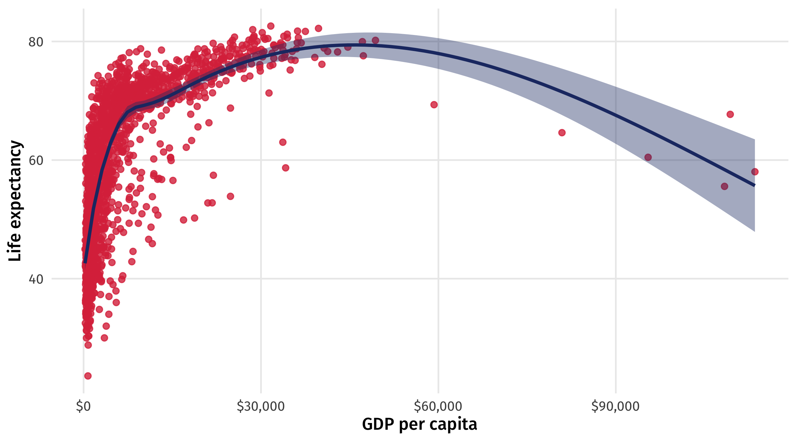
Uncertainty
Polling error, margin of error, uncertainty bounds, all help to quantify how uncertain we feel about an estimate
Vague sense that we are uncertain about what we are estimating
But why are we uncertain? And how can uncertainty be quantified?
Why are we uncertain?
Why are we uncertain?
We don’t have all the data we care about
We have a sample, such as a survey, or a poll, of a population
Problem each sample will look different, and give us a different answer to the question we are trying to answer
What’s going on here? terminology
| Term | Meaning | Example |
|---|---|---|
| Population | All of the instances of the thing we care about | American adults |
| Population parameter | The thing about the population we want to know | Average number of kids among American adults |
| Sample | A subset of the population | A survey |
| Sample estimate | Our estimate of the population parameter | Average number of kids in survey |
Boring example: kids
How many children does the average American adult have? (Population parameter)
Let’s pretend there were only 2,867 people living in the USA, and they were all perfectly sampled in gss_sm
| year | age | childs | degree | race | sex |
|---|---|---|---|---|---|
| 2016 | 41 | 3 | High School | Black | Male |
| 2016 | 65 | 0 | High School | Other | Male |
| 2016 | 27 | 0 | Bachelor | White | Male |
| 2016 | 49 | 3 | Lt High School | Black | Male |
| 2016 | 66 | 2 | Lt High School | White | Male |
Boring example: kids
How many children does the average American adult have?
Sampling
Now imagine that instead of having data on every American, we only have a sample of 10 Americans
Why do we have a sample? Because interviewing every American is prohibitively costly
Same way a poll works: a sample to estimate American public opinion
Sampling
We can pick one sample of 10 people from gss_sm using the rep_sample_n() function from moderndive:
# A tibble: 10 × 33
# Groups: replicate [1]
replicate year id ballot age childs sibs degree race sex region
<int> <dbl> <dbl> <labelled> <dbl> <dbl> <lab> <fct> <fct> <fct> <fct>
1 1 2016 579 2 66 6 14 High … Black Fema… W. So…
2 1 2016 669 3 27 0 0 High … Black Male Middl…
3 1 2016 2185 3 78 4 6 High … White Fema… W. No…
4 1 2016 2797 3 23 1 7 High … White Fema… E. So…
5 1 2016 1298 2 52 1 1 Bache… White Fema… W. So…
6 1 2016 450 2 19 0 0 High … White Fema… New E…
7 1 2016 431 3 26 0 4 Lt Hi… Other Fema… South…
8 1 2016 2067 3 52 2 3 High … White Male E. No…
9 1 2016 1715 3 41 2 5 Bache… White Fema… South…
10 1 2016 1481 1 57 0 3 Bache… White Fema… E. So…
# ℹ 22 more variables: income16 <fct>, relig <fct>, marital <fct>, padeg <fct>,
# madeg <fct>, partyid <fct>, polviews <fct>, happy <fct>, partners <fct>,
# grass <fct>, zodiac <fct>, pres12 <labelled>, wtssall <dbl>,
# income_rc <fct>, agegrp <fct>, ageq <fct>, siblings <fct>, kids <fct>,
# religion <fct>, bigregion <fct>, partners_rc <fct>, obama <dbl>Note
size = size of the sample; reps = number of samples
Sample estimate
We can then calculate the average number of kids among that sample of 10 people
# A tibble: 1 × 2
replicate avg_kids
<int> <dbl>
1 1 1.1this is our sample estimate of the population parameter
Notice that it does not equal the true population parameter (1.87)
The trouble with samples
Problem: each sample will give you a different estimate. Instead of taking 1 sample of size 10, let’s take 1,000 samples of size 10:
The trouble with samples
Across 1,000 samples of 10 people each, the estimated average number of kids can vary between 0.2 and 4.2!! Remember, the true average is 1.85
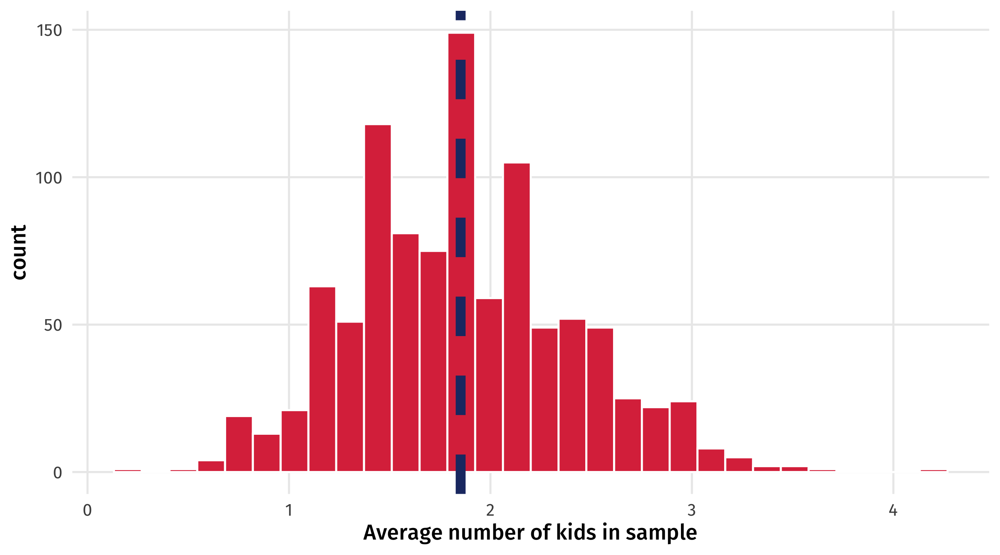
Why are we uncertain?
We only ever have a sample (10 random Americans), but we’re interested in something bigger: a population (the whole of gss_sm)
Polls often ask a couple thousand people (if that!), and try to infer something bigger (how all Americans feel about the President)
The problem: Each sample is going to give us different results!
Especially worrisome: some estimates will be way off, totally by chance
A problem for regression
This is also a problem for regression, since every regression estimate is based on a sample
What’s the relationship between sex and vote choice among American voters?
So females were 8.7 percent more likely to vote for Obama than males
This is the population parameter, since we’re pretending all Americans are in gss_sm
Regression estimates vary too
Each sample will produce different regression estimates
| replicate | term | estimate |
|---|---|---|
| 1 | sexFemale | 0.20 |
| 2 | sexFemale | -0.11 |
| 3 | sexFemale | -0.14 |
| 4 | sexFemale | 0.10 |
| 5 | sexFemale | 0.32 |
| 6 | sexFemale | -0.20 |
| 7 | sexFemale | 0.03 |
| 8 | sexFemale | -0.13 |
Wrong effect estimates
Many of the effects we estimate below are even negative! This is the opposite of the population parameter (0.087)
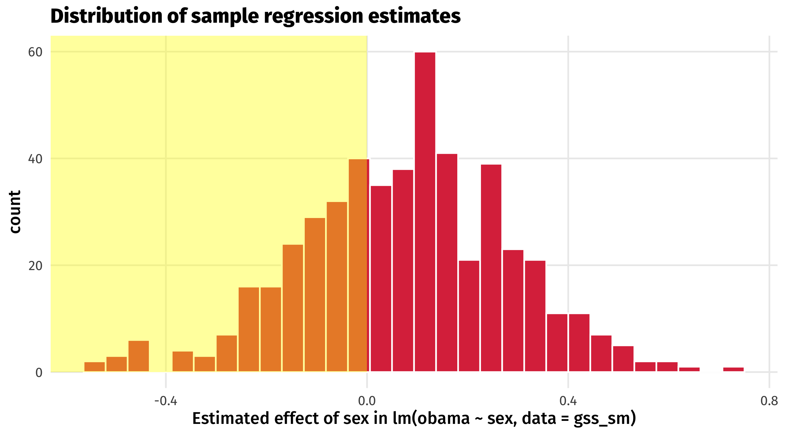
The solution
So how do we know if our sample estimate is close to the population parameter?
Turns out that if a sample is random, representative, and large…
…then the LAW OF LARGE NUMBERS tells us that…
the sample estimate will be pretty close to the population parameter
Law of large numbers
With a small sample, estimates can vary a lot:
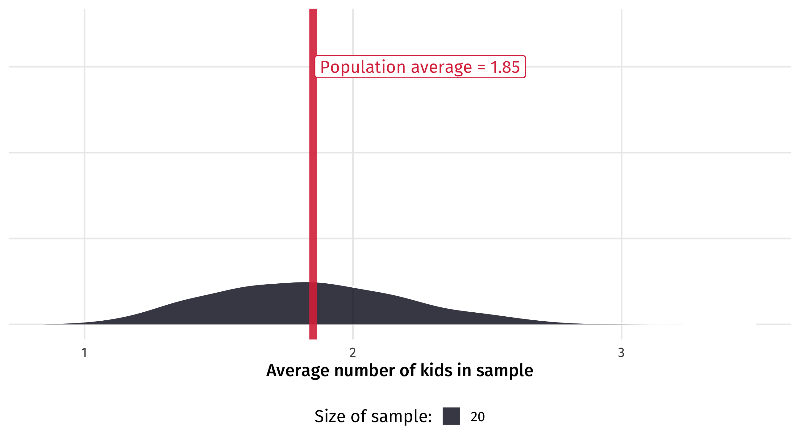
Law of large numbers
As the sample size (N) increases, estimates begin to converge:
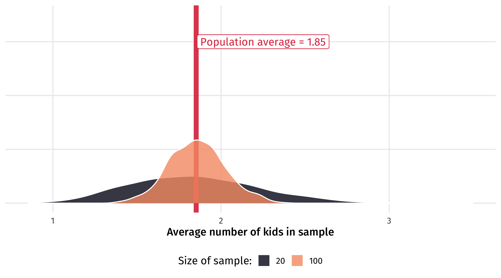
Law of large numbers
They become more concentrated around the population average…
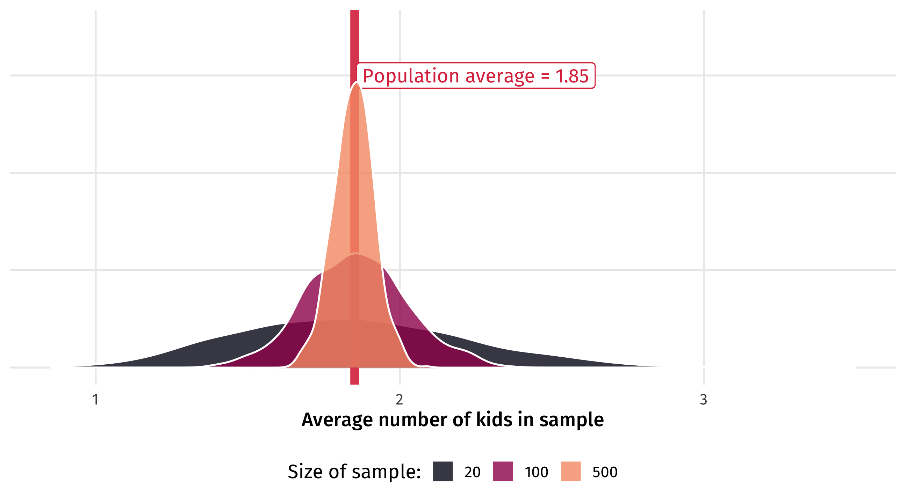
Law of large numbers
And eventually it becomes very unlikely the sample estimate is way off
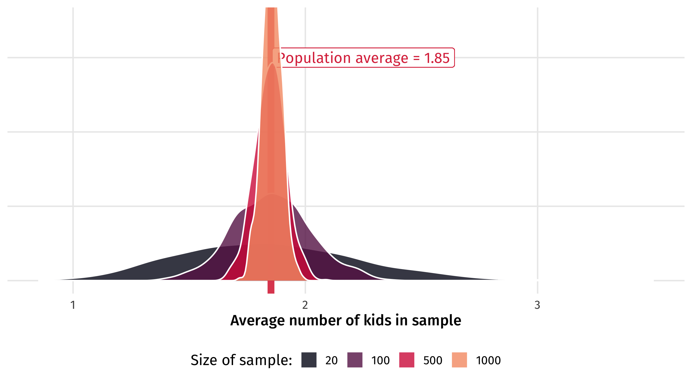
This works for regression estimates, too
Regression estimates also become more precise as sample size increases:
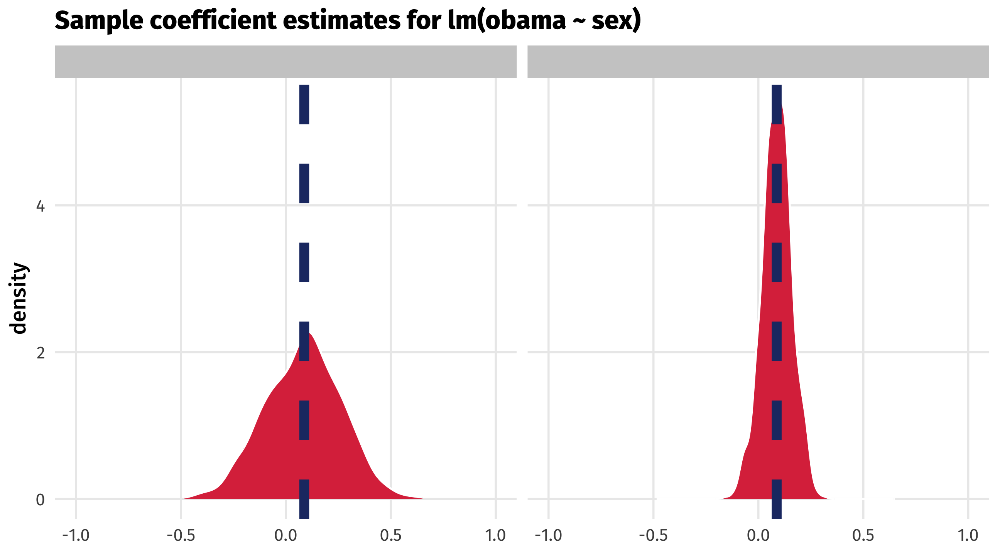
What’s going on?
The larger our sample, the less likely it is that our estimate (average number of kids, the effect of sex on vote choice, etc.) is way off
This is because as sample size increases, sample estimates tend to converge on the population parameter
Next time = we’ll see how to quantify uncertainty based on this tendency
Intuitive = the more data we have, the less uncertain we should feel
But this only works if we have a good sample
Good and bad samples
There are good and bad samples in the world
Good sample representative of the population and unbiased
Bad sample the opposite of a good sample
What does this mean?
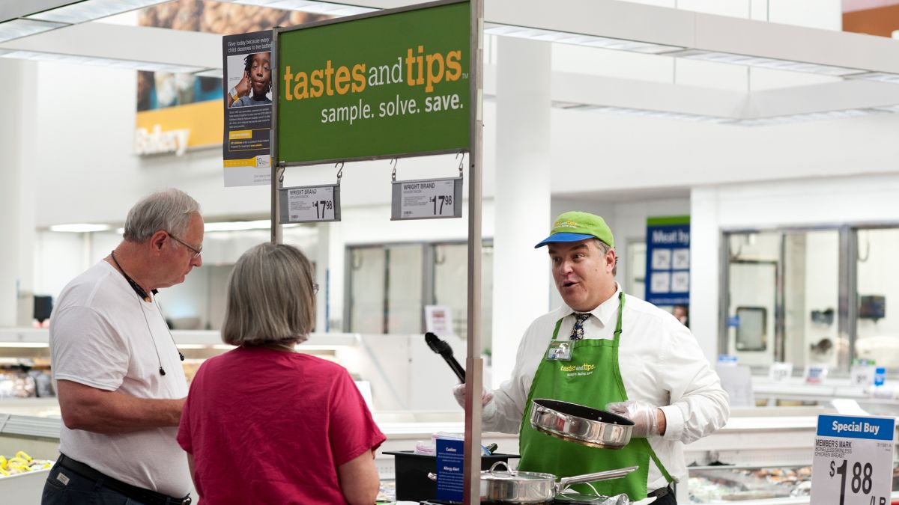
When sampling goes wrong
Imagine that in our quest to find out how many kids the average American has, we do telephone surveys
Younger people are less likely to have a landline than older people, so few young people make it onto our survey
what happens to our estimate?
When sampling goes wrong
We can simulate this by again pretending gss_sm is the whole of the US
When sampling goes wrong
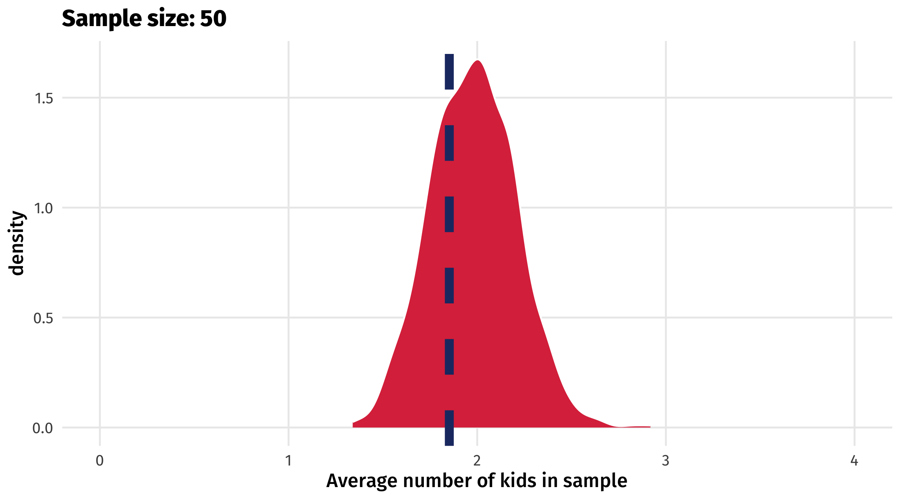
When sampling goes wrong
As sample size increases, variability of estimates will still decrease
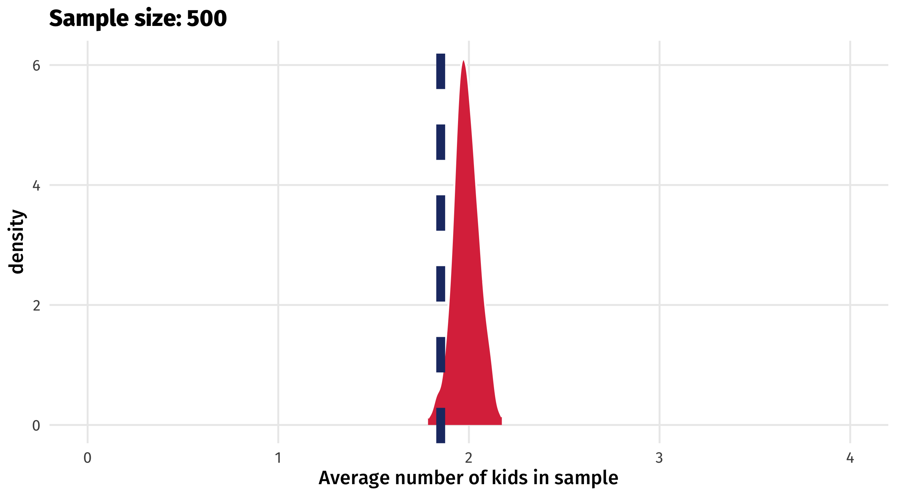
When sampling goes wrong
But estimates will be biased, regardless of sample size
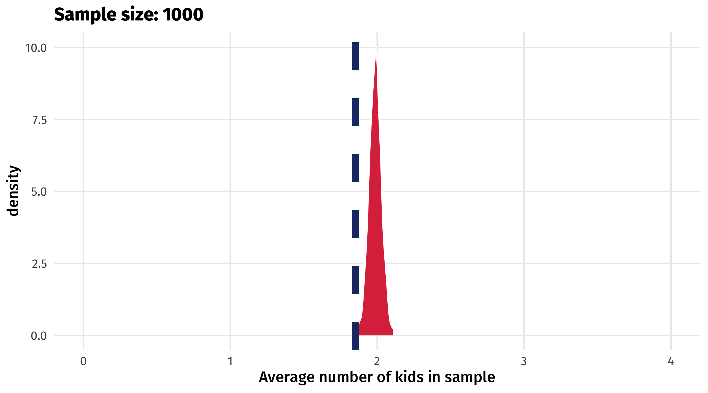
What’s going on?
The sample is not representative of the population (the young people are missing)
This biases our estimate of the population parameter
Randomness is key = everyone needs a similar chance of ending up in the sample
When young people don’t have land-lines, not everyone has a similar chance of ending up in the sample
A big problem!

🚨 Your turn: bias the polls 🚨
Imagine you are an evil pollster:
Think about who you would have to exclude from the data to create estimates that benefit the pro-choice and pro-life side of the abortion debate.
Explain how you think this change would effect the estimate variability as the sample size increases or decreases.
# So… Where are we at?
The problem
We know our analysis is based on samples, and different samples give different answers:
| Sample | Avg. num of kids in sample |
|---|---|
| 1 | 1.3 |
| 2 | 2.2 |
| 3 | 1.5 |
| 4 | 1.0 |
| 5 | 1.5 |
| 6 | 0.7 |
| 7 | 1.8 |
| 8 | 1.8 |
The way out
Turns out that if our samples are representative of the population, then estimates from large samples will tend to be pretty damn close
So if sample is good ✅ and “big” ✅ then most of the time we’ll be OK ✅
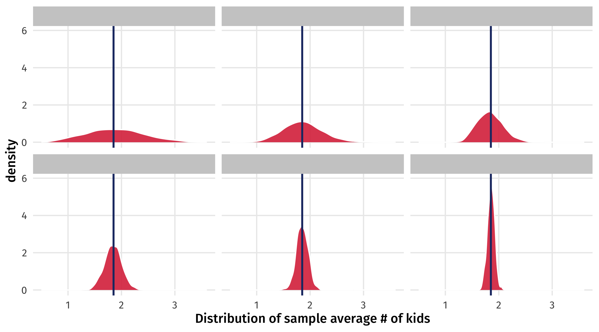
But this is weird
We’ve shown that if we take many (large) random samples, most of the averages of those samples will be close to population parameter
But in real life we only ever have one sample (e.g., one poll)
How do we get a sense for uncertainty from our one sample?
Two approaches
❌ Statistical theory
- Make assumptions about distribution of samples from population
- Design test based on those assumptions (t-test, z-test, etc.)
✅ Simulation
- Simulate different samples that look like ours
- Use distribution of simulated samples to quantify uncertainty
In some cases, both get you to the same answer, in others, only one works
Simulation
We want a sense for how uncertain we should feel on estimates drawn from our sample
Our sample is gss_sm, and we have 2,867 observations
| year | id | ballot | age | childs | sibs | degree | race |
|---|---|---|---|---|---|---|---|
| 2016 | 624 | 3 | 57 | 2 | 11 | High School | Black |
| 2016 | 908 | 2 | 47 | 0 | 4 | High School | White |
| 2016 | 2817 | 2 | 53 | 3 | 2 | Bachelor | White |
| 2016 | 2249 | 2 | 62 | 4 | 3 | High School | Black |
| 2016 | 2071 | 2 | 28 | 0 | 5 | Junior College | White |
How confident are we in the estimate we get from this sample, given its size?
How to simulate
If we take lots of samples of size 20 \(\rightarrow\) uncertainty in a sample of 20
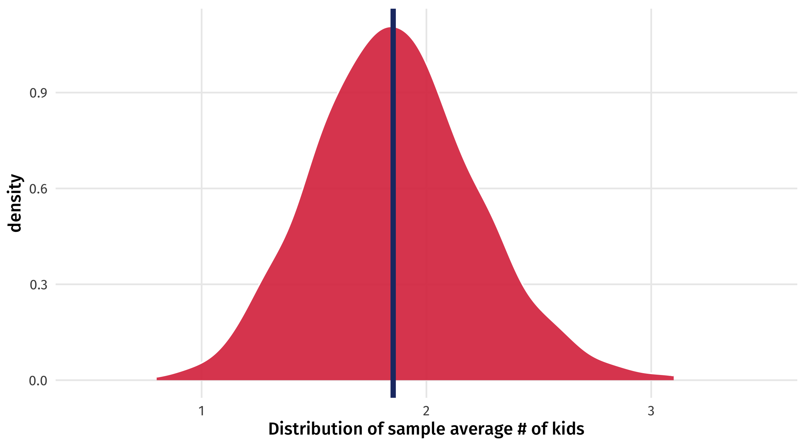
How to simulate
If we take lots of samples of size 100 \(\rightarrow\) uncertainty in a sample of 100
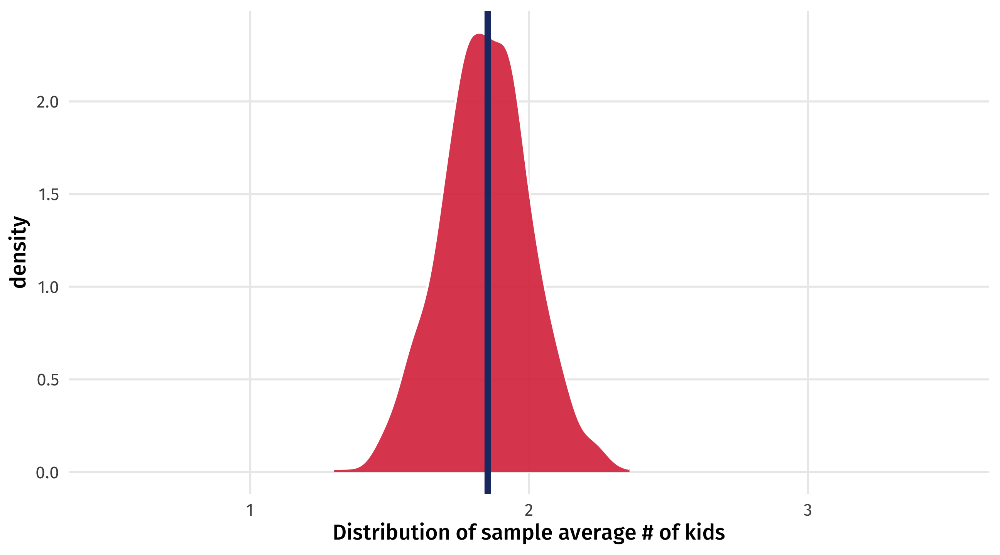
How to simulate
So to see how uncertain we should feel about gss_sm, we should take many samples that are the same size as gss_sm
Note
nrow(DATA) tells you how many observations in data object
Problem
If we have a dataset of 2,867 observations and ask R to randomly pick 2,867 observations, we’ll just get a bunch of copies of the original dataset
Solution: sample with replacement \(\rightarrow\) once we draw an observation it goes back into the dataset, ad can be sampled again
Sampling with replacement
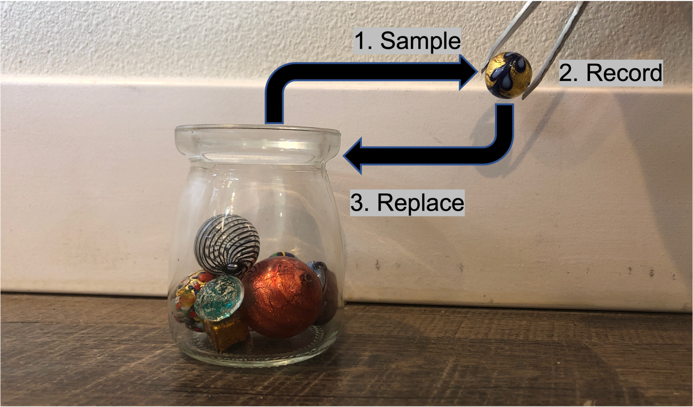
Sampling with and without replacement
If we were sampling 4 of these delicious fruits:
[1] "Mango" "Pineapple" "Banana" "Blackberry"It would look like this, with and without replacement:
| Sample, no replace | Mango | Banana | Pineapple | Blackberry |
| Sample, replace | Pineapple | Pineapple | Banana | Blackberry |
Bootstrapping
- Generating many, same-sized samples with replacement is called bootstrapping
- Replacement lets us generate samples that randomly differ from ours
- Use the distribution of bootstrapped samples to quantify uncertainty
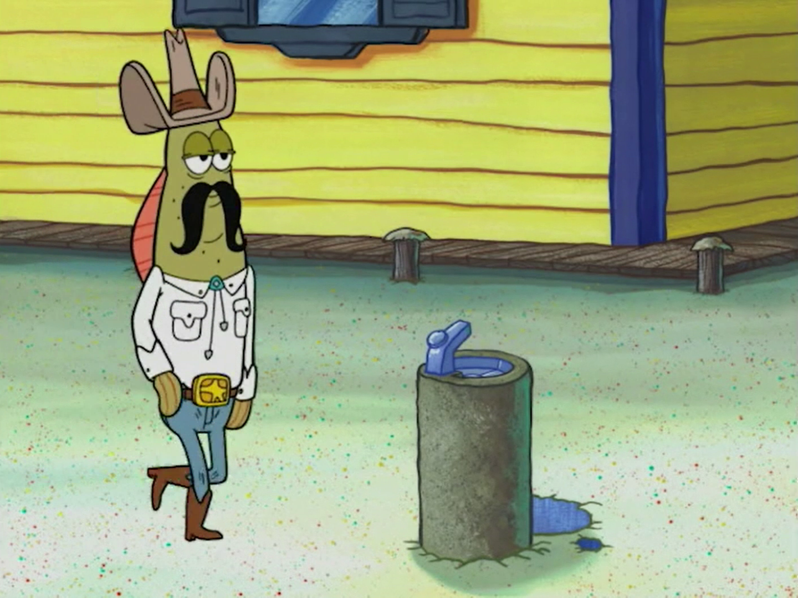
Back to the kids
How uncertain should we be of our estimate of the avg. number of kids in the US, Given that it’s based on our one sample, gss_sm? We can bootstrap:
boot_kids = gss_sm %>%
rep_sample_n(size = nrow(gss_sm), reps = 1000, replace = TRUE) %>%
summarise(avg_kids = mean(childs, na.rm = TRUE))
boot_kids# A tibble: 1,000 × 2
replicate avg_kids
<int> <dbl>
1 1 1.88
2 2 1.85
3 3 1.88
4 4 1.87
5 5 1.88
6 6 1.87
7 7 1.83
8 8 1.84
9 9 1.82
10 10 1.77
# ℹ 990 more rowsThe distribution of bootstrapped estimates
Our estimate and how much simulated estimates might vary across bootstrapped samples that look like ours
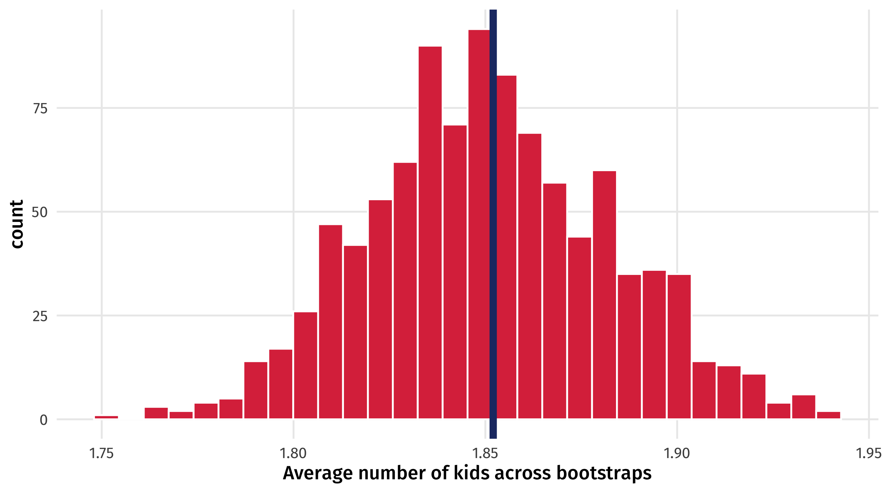
The red is the distribution of bootstrapped sample estimates \(\rightarrow\) the sampling distribution
# Quantifying uncertainty
How to quantify uncertainty?
The red histogram is nice, but how can we communicate uncertainty in our estimates in a pithy, more comparable way?
Three approaches:
- The standard error
- The confidence interval
- Statistical significance

The standard error
One way to quantify uncertainty would be to measure how “wide” the distribution of bootstrapped sample estimates is
As we learned so long ago, one way to measure the “spread” of a distribution (i.e., how much a variable varies), is with the standard deviation
The standard deviation of the sampling distribution is called the standard error, or the margin of error
Standard error
This is what you see in the news – that +/- polling/margin of error
Varying uncertainty
As our sample size increases, the standard error decreases
| Sample size | Average (truth = 10) | Standard error |
|---|---|---|
| 10.00 | 9.12 | 0.74 |
| 64.44 | 10.06 | 0.28 |
| 118.89 | 10.11 | 0.19 |
| 173.33 | 10.07 | 0.16 |
| 227.78 | 9.89 | 0.13 |
| 282.22 | 9.94 | 0.12 |
| 336.67 | 10.00 | 0.11 |
| 391.11 | 10.08 | 0.10 |
| 445.56 | 9.99 | 0.09 |
| 500.00 | 9.92 | 0.09 |
The confidence interval
The confidence interval
Another way to quantify uncertainty is to look where most estimates fall
this is the confidence interval: our “best guess” of what we’re trying to estimate
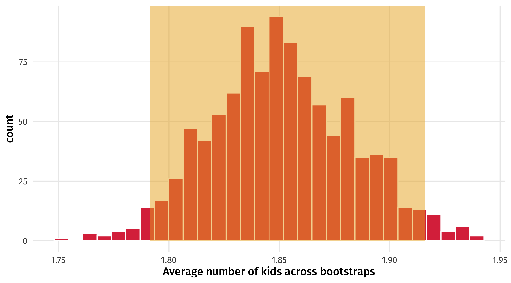
How big to make the interval?
You could report (for example) where the middle 50% of bootstraps fall, or (for example) where the middle 95% of bootstraps fall, but there are tradeoffs!
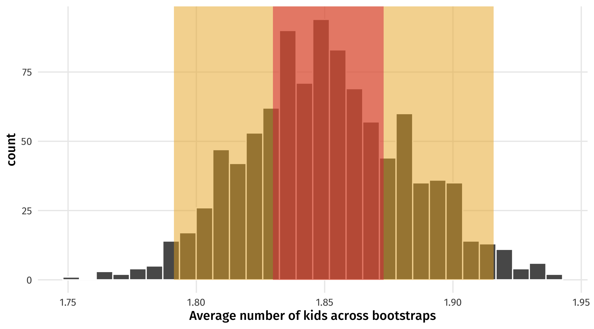
The tradeoff
You are 50% “confident” that avg. number of kids could vary between 1.83 and 1.87. Narrower range! But low confidence!
You are 95% “confident” that avg. number of kids could vary between 1.79 and 1.92. Higher range! But higher confidence!

How big to make the interval?
Convention is to look at the middle 95% of the distribution
Where do the middle 95% of the bootstrap estimates fall?
We can use the quantile() function to get here
The 95% confidence confidence interval for the average number of kids in the US is: (1.80, 1.91)
Mirrors of one another
The standard error and confidence interval are actually telling you the same thing
A 95% confidence interval is roughly equal to the Estimate +/- 1.96 \(\times\) standard error
🚨 Your turn: polling crime victimization 🚨
Use the crime data, and:
Pick a
paisof your choosing. What proportion of respondents have been a victim of a crime in the last 12 months (vic1ext) in that country?OK, but how certain are you of that? Generate 1,000 bootstraps.
Calculate the standard error and the 95% confidence interval of your best guess. Convince yourself the two can be made equivalent.
Note
Use
distinct()to find a country (pias), usefilter()to use that regionboot_data = data |>rep_sample_n(size = nrow(data), reps = 1000, replace = TRUE) |>summarise(avg = mean(variable, na.rm = TRUE),standard_error = sd(variable, na.rm = TRUE))|>mutate(low = avg - 1.96 * standard_error,high = avg + 1.96 * standard_error)
🚨 Example: Polling Crime Victimization 🚨
library(juanr)
data <- crime |>
filter(pais == "Mexico")
boot_data = data |>
rep_sample_n(size = nrow(data), reps = 1000, replace = TRUE) |>
summarise(avg = mean(vic1ext, na.rm = TRUE),
standard_error = sd(vic1ext, na.rm = TRUE)) |>
mutate(low = avg - 1.96 * standard_error,
high = avg + 1.96 * standard_error) 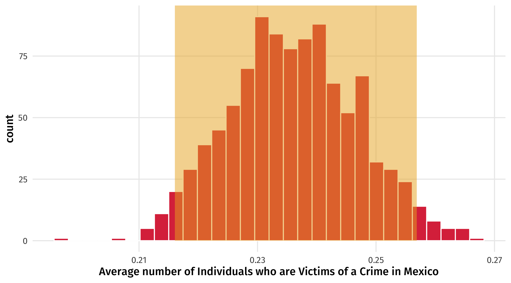